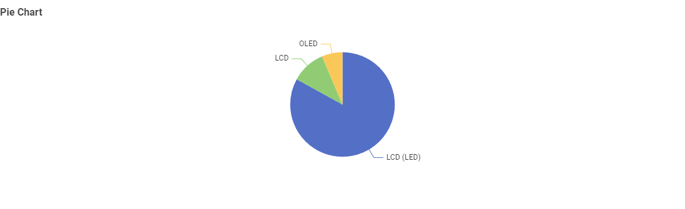
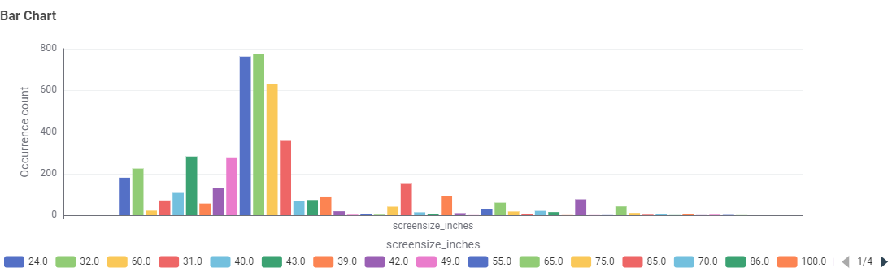
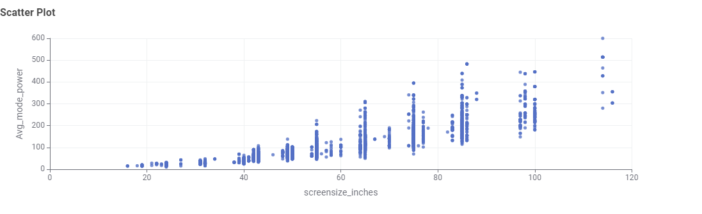

Television Energy Consumption
Explore the data on TVs available in the Australian market. The charts below answer key questions about screen technologies, sizes, brands, and power consumption.
1. What type of TV screen technologies are currently available?

Insight: LCD (LED) is by far the most common screen technology in Australia, followed by standard LCD, with OLED being the least common.
2. What screen sizes are currently available, and which are the most frequent?

Insight: The most common TV sizes are 40-inch and 43-inch, followed closely by 60-inch screens.
3. Which type of screen technology consumes the least amount of power?

Insight: Standard LCD TVs consume the least amount of power on average, while OLEDs use slightly more.
4. What is the relationship between screen size and power use?

Insight: There is a clear positive correlation. As screen size increases, power consumption also increases.
Final Takeaway
When choosing a TV, balance brand, size, and efficiency. A 65-inch LED TV is a common and energy-smart choice for Australian consumers.